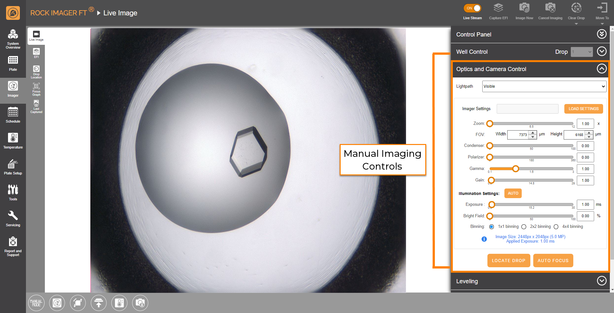
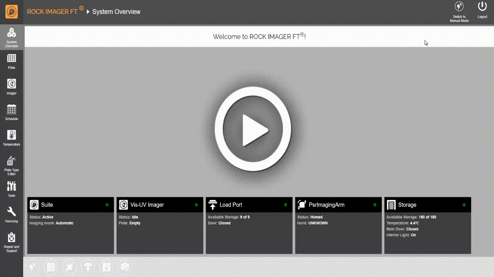

Manual and Automatic Imaging Modes¶
Imaging Mode Overview¶
The main function of ROCK IMAGER FT is to image crystallography experiment plates. During the imaging session, ROCK IMAGER FT takes a collection of drop images (also called an inspection) according to a pre-set schedule and imaging settings that have been set either manually or automatically in ROCK MAKER (or via ImagerLink).
ROCK IMAGER FT allows you to switch between two imaging modes: Manual and Auto. Imaging modes determine how the plate imaging sessions are executed and what imaging functions are accessible. For example, manual imaging controls, marked in the orange square below, on the Live Image sub-menu are only accessible when you are in Manual Mode.
{kind=link}
Manual Imaging Control is Available in Manual Mode
Auto Mode¶
When ROCK IMAGER FT is in Auto Mode, it images plates according to the schedules set in ROCK MAKER or ImagerLink. But, you can override Auto Mode and create an on-demand imaging session by using the Image Now feature.
When you override Auto Mode while the imager is busy, it will finish imaging the plate currently in the imager and immediately image the plate overridden by the Image Now feature. Read Initiating an On-Demand Imaging Session for more information.
Example: ROCK IMAGER is currently imaging a plate from experiment A, but recent images of experiment B’s plate show promising crystal growth and you want to see how the crystals have developed before you leave the lab. You can find your experiment B’s plate using the Search tab and select Image Now. ROCK IMAGER FT will finish imaging experiment A, then pause the planned automatic schedules to first image experiment B’s plate. When it’s imaging is finished, ROCK IMAGER FT will continue its already scheduled imaging sessions.
Manual Mode¶
In Manual Mode, you can initiate an unscheduled imaging session directly from ROCK IMAGER FT or move a plate to an imager to inspect its contents. When you switch to Manual Mode, ROCK IMAGER FT suspends the automatic imaging schedule(s).
While viewing images in real time using the Live Stream feature, you can select any of the imaging settings defined in ROCK MAKER. This will help you analyze how the images change as you switch between imaging settings.
If the system is accidentally left in Manual Mode for more than six hours, ROCK IMAGER FT will email FORMULATRIX support to check on the imager. Our support technicians will return the imager to its automatic imaging schedule to prevent an excessive imaging backlog in the system.
Warning
If you are viewing a plate image, be aware that leaving the Live Stream ON for an extended period of time can cause thermal decomposition to your samples. Moreover, for UV lightpath, turning the Illumination button OFF when not actively inspecting a well’s content increases the longevity of the light source.
To switch between modes:¶
Go to the System Overview menu.
in the upper-right corner of the screen, click either the Switch to Manual Mode or Switch to Auto Mode button.
OPTIONAL: If you switch to Manual Mode, the Resume Scheduled Imaging dialog box will appear. It asks whether you want ROCK MAKER to automatically switch back to Auto Mode after a certain period of time or if you want to switch it back yourself.
Auto and Manual Mode Options
{kind=link}